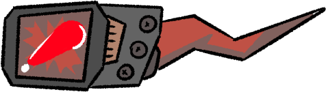

Items
Colored item boxes are scattered around the race track. Collecting the same color increases the level of the item by 1.

Attack
LASER
Fires a homing laser at the racer in front, dealing a moderate amount of damage.
Defense
LANDMINE
Places a landmine behind the racer, which explodes when it comes into contact with another racer.

Boost
BOOST
A short boost that carries the racer forwards a distance.

Racers
Racers have the same abilities as the player, and have a logic system that determines when they use items.
Randomizer
Colors and names are randomly generated at the start of a race cup, and carry on between races. This allows players to form nemeses throughout the race.
Drifting
Racers are capable of taking sharp turns around corners. After completing a drift, a small boost will activate launching the racer forwards.

Health
Racers have a certain amount of health that is reduced when smashing into walls or getting hit by lasers. When HP drops to 0 the racer will explode and be placed at a race checkpoint.
Quips
When racers pass a another racer, hurt a racer, or finish a race, they will exchange dialogue and taunt.

Race
Races are a simple 3 laps and are part of a cup. Cups are 3 races long, and at the end of a cup, scores are created and whoever is in first wins.
Leaderboard
Leaderboards award points based on finished position, they carry between races until the end of the cup. They also determine placement in the next race.

Race Logic


Races are built by a series of checkpoints, these checkpoints determine where racers will respawn, and help accurately determine racer placement.